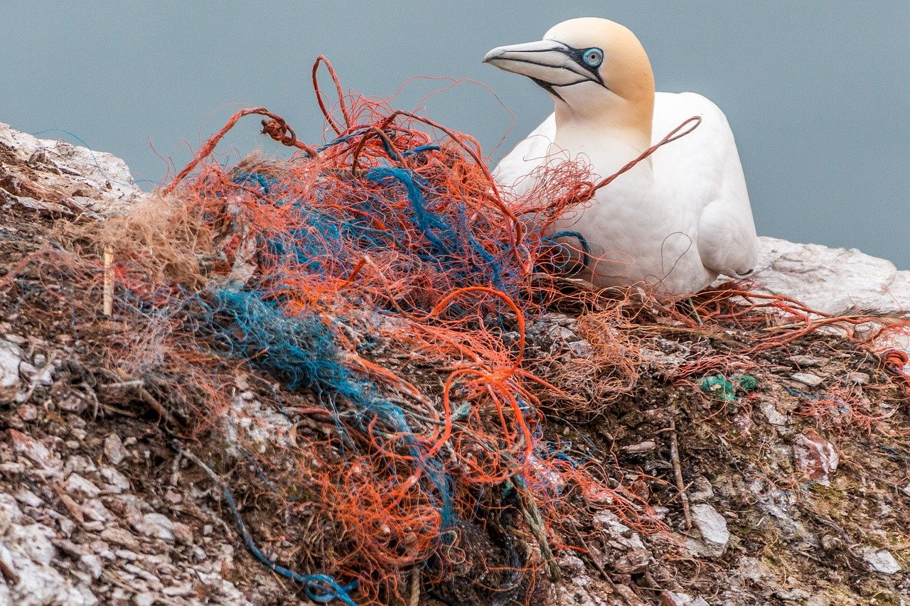

Der Diskurs über das Monitoring von Tieren und ihren Lebensräumen wird schon lange geführt. Im Zeitalter des Anthropozäns – das heißt in Zeiten in denen der Planet Erde von den Menschen umgeformt wurde und dessen Interessen über denen anderer Lebewesen stehen – ist dieser Diskurs drängender denn je. Der Rückgang der Biodiversität und das Arten- und Vogelsterben ist derzeit dramatisch und alarmierend. Wissen und Verständnis sind daher Grundvoraussetzungen, um für den Erhalt und die Förderung der Biodiversität zu werben. Studien zeigen, dass in der Gesellschaft und insbesondere bei jungen Menschen das Wissen und die Kenntnis über heimische Arten rapide abnimmt. Das Ergebnis einer Studie die an 186 Berliner Schüler*innen der siebten Klasse durchgeführt wurde zeigte, das keine*r der Schüler*innen die getesteten Vogelarten akustisch bestimmen konnte. Daraus ließe sich schließen, dass es einen erhöhten Bedarf an der Vermittlung von Artenkenntnis gibt.
Nur wenn der Mensch in Kontakt mit seiner Umwelt tritt versteht er seinen Einfluss auf diese und ist vielleicht eher bereit dazu sich für dessen Schutz und Erhalt einzusetzen. Die Artenkenntnis bildet die Basis für ein Verständnis gegenüber anderer Lebewesen. Das Wissen darum wie Ökosysteme funktionieren und die Kenntnis über die Natur, die dem Menschen in seinem Alltag begegnet, sowie die Verständigung mit dieser ist eine der Kernkompetenzen, um globale Zusammenhänge verstehen zu können. Der Tschilp soll zu einem solch besseren Verständnis beitragen und dienen Menschen motivieren sich mit seiner Umwelt in Verbindung zu bringen.